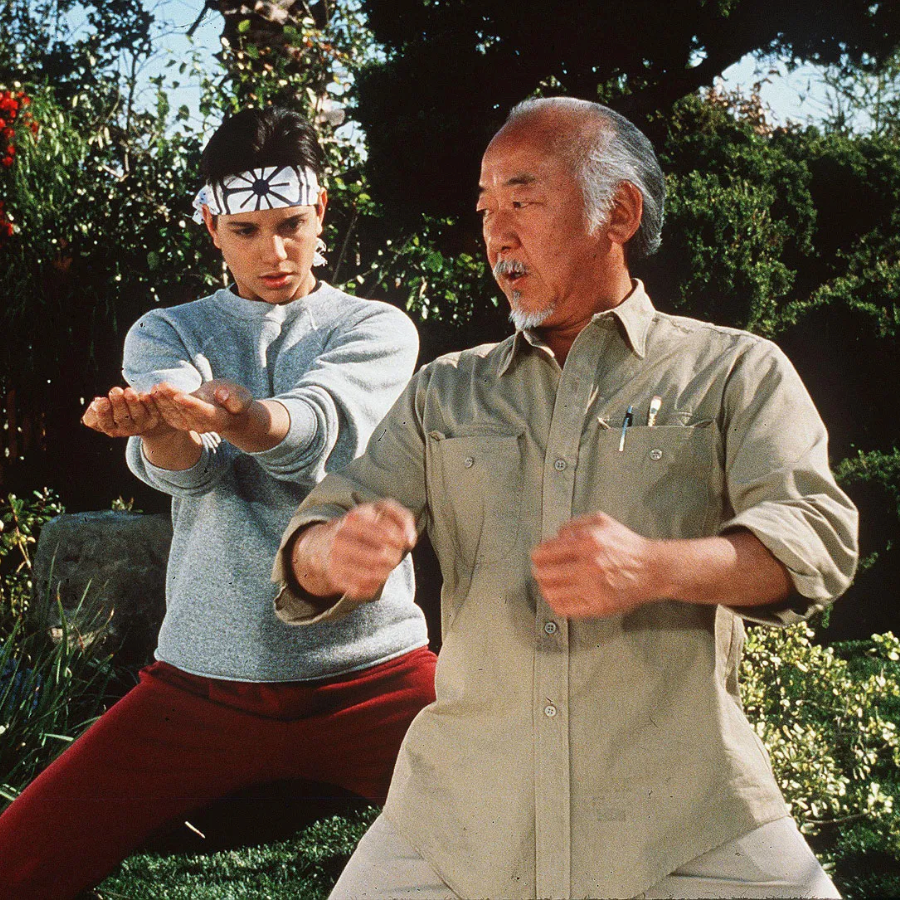
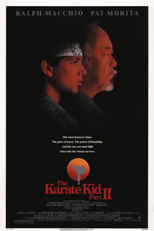
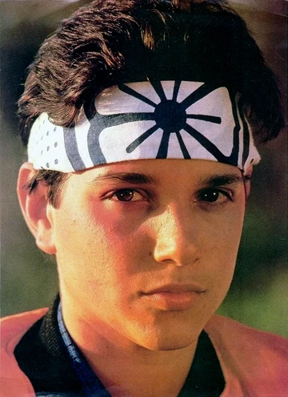
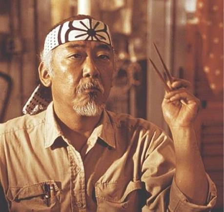
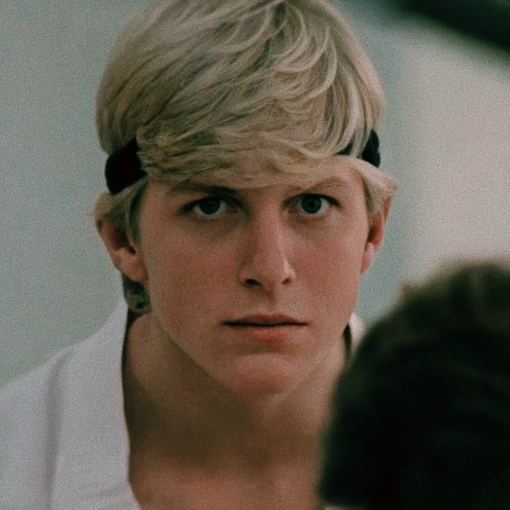

1984
Karatê Kid
Daniel LaRusso muda de cidade e enfrenta dificuldades na escola. Com a ajuda do Sr. Miyagi, aprende karatê e descobre o valor da confiança e da persistência.

A ERA DE OURO
Filmes que ensinaram que a verdadeira força começa com disciplina, respeito e determinação.
1984
Daniel LaRusso muda de cidade e enfrenta dificuldades na escola. Com a ajuda do Sr. Miyagi, aprende karatê e descobre o valor da confiança e da persistência.

1989
Daniel e Miyagi enfrentam novos desafios. Daniel precisa decidir em quem confiar e colocar em prática os ensinamentos que recebeu de seu mestre.

1986
Daniel acompanha Miyagi até Okinawa, onde conhece o passado de seu mestre e aprende mais sobre honra, família e responsabilidade.
QUEM FEZ HISTÓRIA
Cada personagem tem uma história e uma lição que faz parte do universo de Karate Kid.

Um jovem que aprende a enfrentar seus medos e a superar desafios por meio do treinamento e da disciplina.

O mestre que ensina a Daniel que o karatê exige equilíbrio, paciência, respeito e autocontrole.

Um personagem que ganha novas camadas ao longo da história e precisa lidar com escolhas e rivalidades do passado.

O LEGADO CONTINUA
Décadas depois dos filmes clássicos, o universo de Karate Kid ganhou uma nova fase com Cobra Kai. A série revisita antigas rivalidades e apresenta novos personagens, desafios e histórias.
CONHEÇA A SÉRIEFIM DA FITA?
Algumas histórias atravessam gerações. O legado continua vivo.
SOBRE O PROJETO
Este site é uma homenagem ao universo de Karate Kid, aos filmes clássicos e aos personagens que marcaram a história do cinema. Um espaço para relembrar histórias de amizade, superação, disciplina e respeito.